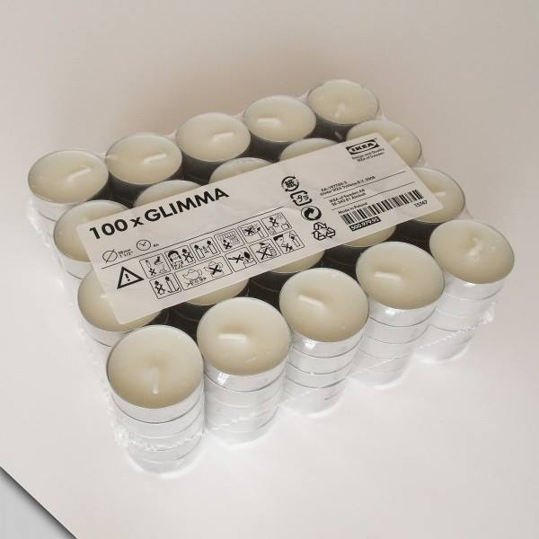

Если бы я снимал фильм ужасов о чём-то, что нельзя убить, он бы назывался именно так.
Мы с Наташей раньше были молодыми, и допустили когда-то ошибку: купили несколько небольших упаковок. Так, к слову, делают все, кто в Икею попадает впервые. Уверен, эти шведы там чем-то облучают покупателей с периферии. Достанут свою аромотерапию и цены 9.99, и облучают.
С тех пор мы много лет уничтожаем эти свечи, сжигая их. Я уже молчу про подсвечники для этих свечей, они не горят поэтому штук 10 пришлось выбросить. Но до сих пор у нас в нескольких ящиках в шкафах лежат по 15-20 свечей, которые казалось бы должны создавать романтическое настроение, ан нет.

С наступающим вас открытием Леруа Мерлен в Кемерове.